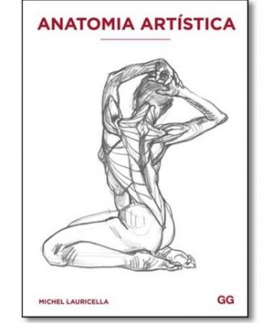
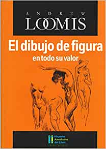
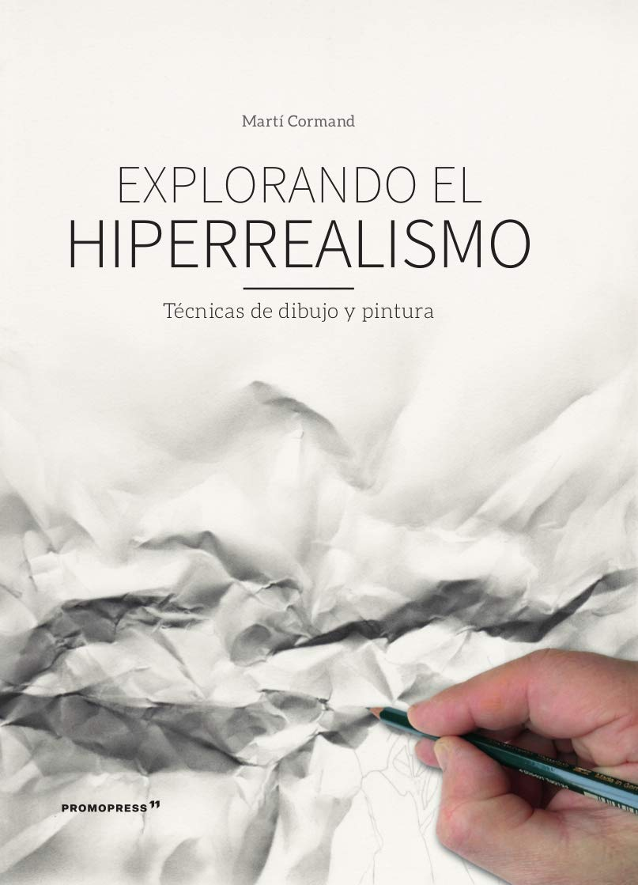
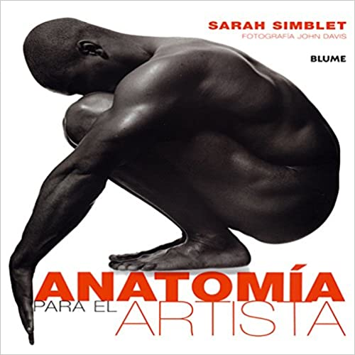

Técnicas de los artistas clásicos, sigue el mismo método de dos pasos que se enseña a los artistas de DreamWorks,
Warner Brothers y Disney Animation. Ideal para descubrir los conceptos de estructura y gesto que no solo son los pilares de toda gran obra
de arte: desde la gran Venus de Milo hasta la Sibila de Miguel Angel o los frescos de Raphael; sino también las herramientas fundamentales
que emplean los artistas para dibujar cualquier figura humana.
El Dibujo de Figura en Todo su Valor - Andrew Loomis
$450
Precio Mayoreo: $340

Reeditado este mes por Ediciones Lancelot, esta pieza educativa -quizás las más célebre de Loomis-
incluye capítulos sobre anatomía, planos e iluminación, dibujos de modelos vivos, la cabeza, figuras en acción y vestidos con el objetivo
final de que el dibujante pueda "vender su trabajo fácilmente", haciendo hincapié en estilos publicitarios.
Anatomia Aristica - Michel Lauricella
$890
Precio Mayoreo: $860

Comprender la morfología y la estructura del cuerpo humano es esencial para poder representarlo artísticamente.
Este libro nos introduce de forma práctica y visual en la anatomía artística a través del écorché y otras técnicas de dibujo.
Sus cerca de mil ilustraciones nos permiten captar la naturaleza del cuerpo humano en su vertiente más formal con el objetivo de que este
aprendizaje se convierta en una potente fuente de creatividad.
Explorando el Hiperrealismo - Marti Cormand
$250
Precio Mayoreo: $150

Este título introduce el movimiento del hiperrealismo, un género que se aplica a la pintura y cuyas técnicas aspiran a
una precisión fotográfica de lo dibujado. Desde la primera acción antes de afrontar la pieza que es la búsqueda de información y de imágenes de
referencia, hasta las diferentes técnicas de dibujo y de escultura, el libro explica el proceso de creación, paso a paso, y
muestra cómo ilustrar en blanco y negro o con lápices de colores, cómo trabajar la acuarela, el óleo, cómo hacer un trompe loeil y
cómo crear un modelo en 3D de aspecto totalmente real.
El Retraro - Giovanni Civardi
$780
Precio Mayoreo: $750
El retrato es en su acepción habitual,la representación de los rasgos de un ser humano, es decir,
de su rostro o de la figuraentera.Siempre ha sido,y es aún,un tema importante en las artes figurativas y caro a los artistas, que han
encontrado en él,además de un género profesional bien retribuido y socialmente apreciado por su valor simbólico o conmemorativo, tambiénuna
oportunidad muy interesante para indagar sobre la condición humana observada desde el punto de vista físico y, sobretodo, psicológico.
Anatomía para El Artista - Sarah Simbblet
$680
Precio Mayoreo: $650

Una interacción entre dibujo y fotografía que ilustra la relación entre el aspecto superficial de la forma humana y
las complejidades de su estructura subyacente. Lecciones prácticas de dibujo para visualizar y dibujar cada parte del cuerpo.